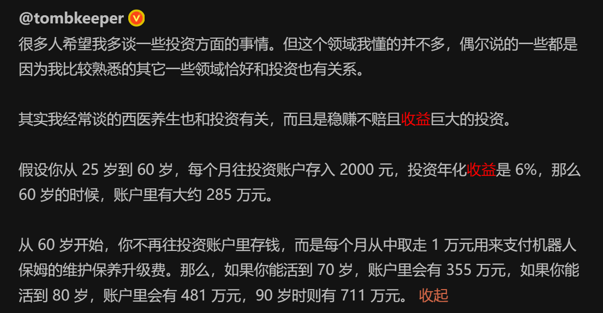
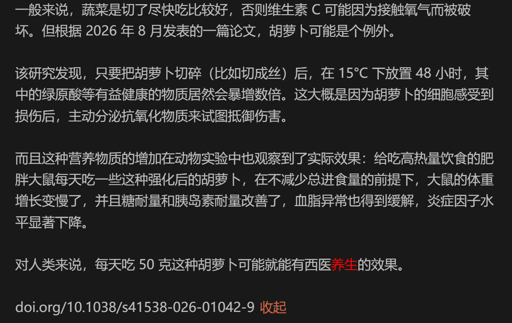

人生设计 终
有两个习惯对我有很大助力，第一个是记录，20年意识到得记录，然后到今天，就有了一堆markdown文本；第二个是看书，我看了很多书，可以说世界观是通过这些书拼凑出来的。
在这个过程中发现了很多有意思的内容。
比如查理芒格的栅格思维模型，他的思维是一个栅格，里面存了很多模型，思考问题的时候就从栅格中挑几个，能降低偏见对实事判断的影响。他对心理学感兴趣，就根据他的观察自创了误判心理学，例，损失厌恶、过度乐观的倾向、受简单联想影响的倾向。
toc，瓶颈理论，高德拉特博士对如何提升制造业效率的解答。一句话，先找瓶颈，在瓶颈处加缓冲。他的这套东西不仅仅适用于制造生产，各种需要优化系统效率的地方，都适用。比如前段时间学习怎么提升网络传输效率，学到的方法，它的底层逻辑，就是瓶颈理论。
还有人解读道德经，基于道德经的文本，他抽象出了一套架构方法，虚心实腹、守弱、袭明、见朴抱素、德厚。架构师的作用，是尽量让前期的投入，变为实打实的回报，而不是打水漂。
之前写"人生设计"，就是记录一些很小视角，具体可以翻文章。最后一篇，我更想强调“视角”本身。
面对一个陌生的事物，得先找视角分析，然后基于视角衍生出工具或者方法论。
人生设计，可以用“无限、有限游戏”作类比，有些事情是需要长期坚持，有些事情则需要在特定时间内闭环。身处的环境影响我们的注意力焦点。有些之前没关注到的东西，可能会影响我们的生活，这个就需要视角，帮我们把注意力拉回来。
看到两个有意思的观点：


一个是投资理财的复利效应，一个是西医养生。从一直玩的角度讲，这两个习惯是可以终身坚持的，复利，就是很简单的数学公式，但是真正懂并能坚持下去的人特别少。
之前接触了《斯坦福大学人生设计课程》，它里面也提供了一套工具，AEIOU来透视，找到那些可以真正投入的场景或者互动，类似的工具有很多。比如阿德勒的自卑心理学；还有李娟《寻找阿德勒》，她对生活的感知；我们可以通过箴言的方式、或者感知去体验不同的生活方式，或者生活哲学。
有很多视角，但没关系，视角越多，我们的感知就越丰富，总能找到一种契合你的生活方式。未经审视的人生不值得来过，人生设计，我觉得是一个动态过程，总能发现新东西，也总是在不同的视角间切换。把这些视角记录下来，可能有意想不到的惊喜。